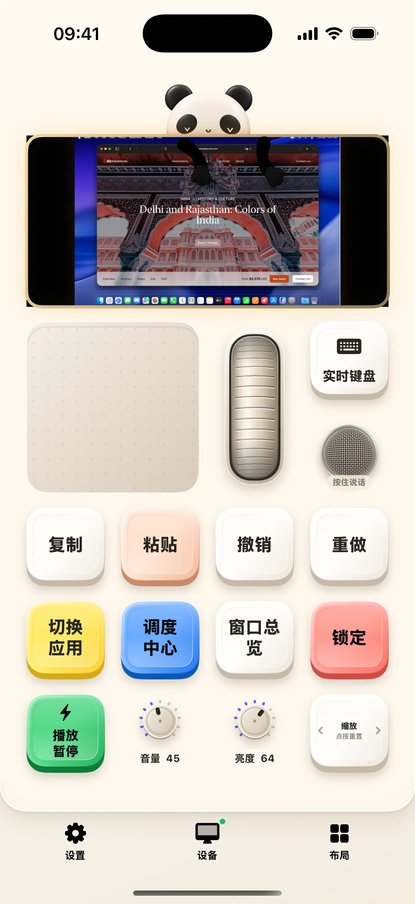

媒体布局围绕一块信息屏和一枚点击轮展开。播放时看曲目与进度，转轮调音量；进入菜单后，转轮改为选择条目，中心键确认。奶猫妙控让手机承担选歌和播放控制，声音仍由 Mac 当前的输出设备播放。
熟悉点击轮的两种状态
在播放页转动点击轮可以调音量，按中心键在进度定位、歌词、封面和歌曲信息之间切换。播放器没有歌词能力时会跳过该页。菜单中转动选择、按中心键进入，MENU 返回上一级；长按 MENU 可以回主菜单。
切歌、定位和暂停各有位置
左右键切换曲目，左键优先回到歌曲开头，短时间内再次按下才切上一首；长按左右键用于快退或快进。播放进度集中在信息屏内，拖动先预览位置，松手后提交。睡前可以设置定时暂停，定时器在 Mac 端管理。

媒体库会按播放器能力显示
Apple Music 支持本地媒体库浏览、搜索、队列等更完整的入口；Spotify 提供当前播放与其脚本接口开放的控制。列表、歌词、收藏、播放模式和进度定位是否可用，取决于播放器提供的能力与当前内容，不能把两个播放器的菜单视为完全相同。
声音输出与连接状态
可以从媒体布局查看和切换可用声音输出。切换歌曲、播放器或断开连接时，旧的进度拖动会被取消，避免落到下一首歌上。媒体订阅、在线音乐和 AirPlay 等仍由播放器与 macOS 提供。
开始使用
- 先在 Mac 播放一首歌，再打开「媒体」。
- 用中心键查看不同信息页，MENU 返回。
- 进入播放列表或搜索；按当前播放器开放的菜单操作。
常见问题
Spotify 和 Apple Music 的功能一样吗？
不完全一样。媒体布局按各播放器实际开放的能力显示入口。
定时暂停后可以切到别的布局吗？
可以。定时器在 Mac 端绑定原播放器；退出 Mac 适配器后不会继续保留该计时。
本文对应 1.2.0。查看更新说明，或加入 iPhone / iPad TestFlight。